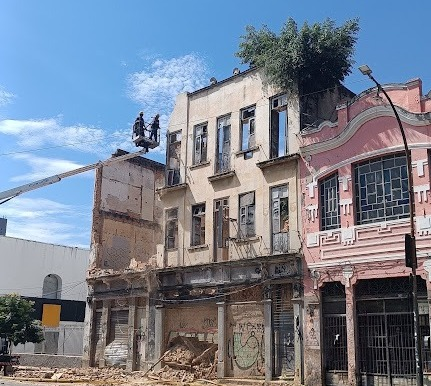

ENCONTRO + PASSEIO FOTOGRÁFICO
Projeto demonstrativo desenvolvido para fins de aprendizagem. Não há inscrições ou evento real.
Seu celular.
Seu olhar.
Novas possibilidades.
Descubra como transformar cenas do cotidiano em fotografias que contam histórias — sem precisar de uma câmera profissional.
Você só precisa do seu celular.
MAIS DO QUE UM CURSO
Aprender fotografia é
aprender a observar.
Em um encontro leve e cheio de descobertas, vamos sair do automático e explorar o mundo ao redor com outros olhos. Você vai conhecer recursos do celular, experimentar composições e praticar enquanto percorremos um lugar inspirador.
Não é sobre ter o melhor aparelho. É sobre descobrir tudo o que você pode criar com o que já tem nas mãos.
Reserve seu lugar ↗UM MUNDO DE POSSIBILIDADES
Olha só o que
cabe no seu celular.
Da luz suave de uma flor à energia da cidade: cenas simples podem render imagens incríveis quando você aprende a olhar.




Imagens ilustrativas: os resultados variam conforme o aparelho, a luz e a técnica utilizada.
NA PRÁTICA, SEM COMPLICAÇÃO
Você vai sair com
um novo olhar.
- 01Conheça a câmera do seu celular
Foco, exposição, lentes e configurações úteis.
- 02Componha imagens interessantes
Enquadramento, perspectiva, linhas e equilíbrio.
- 03Use a luz a seu favor
Como aproveitar luz natural, sombras e contraluz.
- 04Experimente e pratique
Exercícios durante o passeio e dicas para editar.
UM ENCONTRO PARA DESACELERAR E CRIAR
Fotografia se aprende
fotografando.
Um cenário escolhido para inspirar nosso passeio.
Um encontro com explicações e prática ao ar livre.
Venha com bateria carregada e espaço para fotografar.
VAGAS LIMITADAS
Seu próximo clique
pode ser extraordinário.
Preencha seus dados para demonstrar interesse. Vamos entrar em contato com as informações de data, local e investimento.